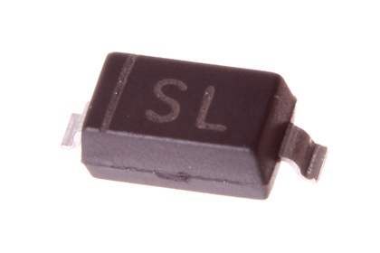

SMD (SOD-123) 500 mA Diode (Schottky) 40v - DS35D

Summary
Name: SMD (SOD-123) 500 mA Diode (Schottky) 40v
ID: DIOS-S123-X-A05D-V4
Hex ID: DS35D
WebPage: https://github.com/oomlout/oomlout-OOMP/wiki/DIOS-S123-X-A05D-V4
Short URL: http://oom.lt/DS35D
Revision History: https://github.com/oomlout/oomlout-OOMP/blob/master/parts/DIOS-S123-X-A05D-V4/
| Type |
Size |
Color |
Description |
Index |
DIOS
Diode (Schottky) |
S123
SMD (SOD-123) |
X
|
A05D
500 mA |
V4
40v |
Images
About
This part is awaiting a description.
Specifications
| Info |
Value |
| Type |
Diode (Schottky) |
| Size |
SMD (SOD-123) |
| Description |
500 mA |
| Index |
40v |
Extra Details
Spotted a mistake, want to add more? Let us know oomp@oomlout.com
All images and resources are licensed [CC BY-SA] unless otherwise stated (ie. the datasheets)